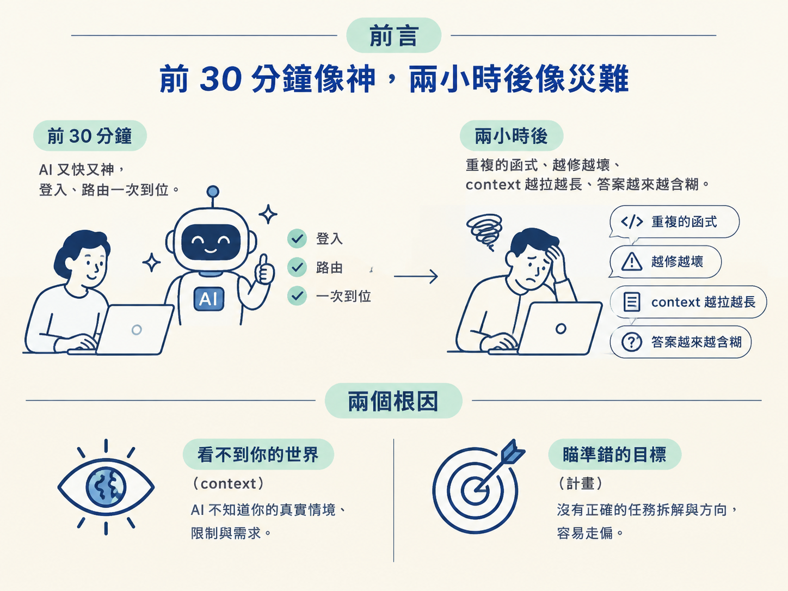
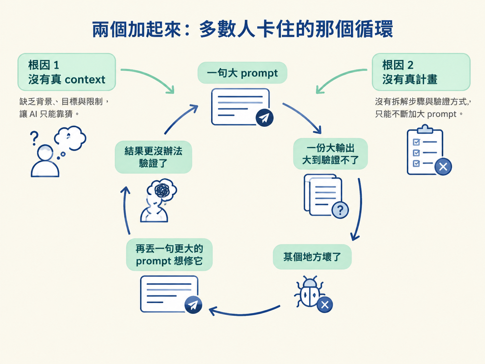
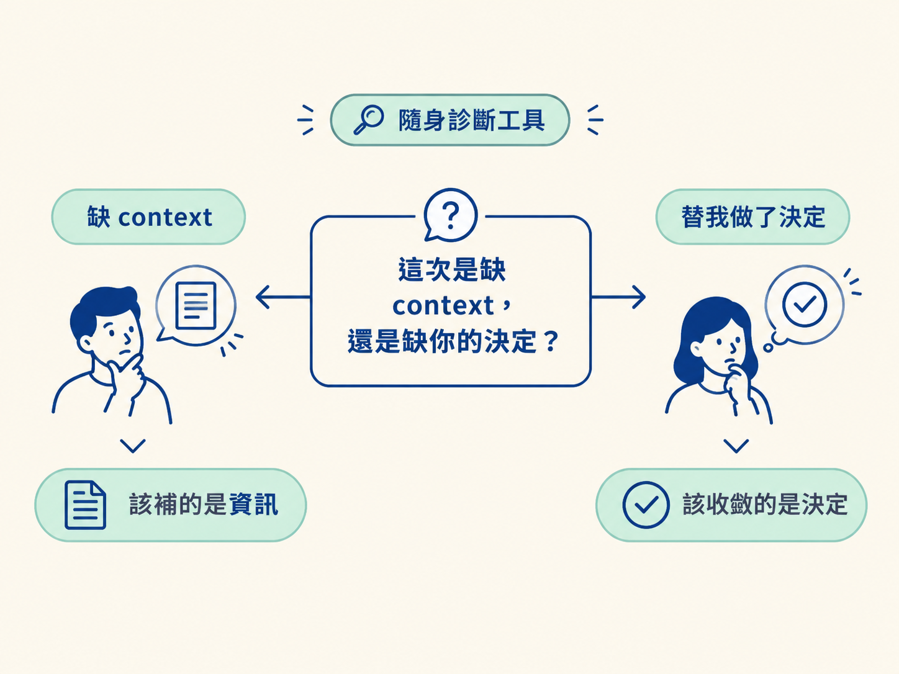

用「沒有真 context」與「沒有真計畫」這兩個根因，解釋 AI coding 為什麼前一陣子很神、之後開始崩壞，並且記住那句隨身帶著走的診斷問句：這次是缺 context，還是缺你的決定？
你大概很熟這個畫面。開一個新專案，丟一句 prompt 進去，AI 立刻動起來：登入幫你接好、路由幫你配好，快得像在你話還沒打完之前就知道你要什麼。前 30 分鐘，你心裡想的是「這東西真的改變了一切」。
然後裂縫出現了。一個小時後，它多寫了一個它自己早就寫過的函式。你把錯誤貼回去，它修好這一處，卻弄壞另一處。你只叫它動一個檔案，它順手重寫了三個你根本沒提過的檔案。context 越拉越長，回應越來越慢，答案越來越含糊。兩個小時後，你已經不太確定它到底是在幫你，還是在信心滿滿地生成你累到沒力氣檢查的程式碼。
於是你開了新的對話，想把它「補習」回狀況內，結果只是把已經解釋過的事再解釋一遍。
如果這聽起來太熟，先講一個好消息：它不是你的錯，也不是你不夠會下 prompt。它會發生，是因為兩件很根本的事。而這兩件事，都不是換一句更厲害的 prompt 修得好的。這一節就把這兩個根因拆開來講。

第一個根因是：模型手上沒有你真實的 context。
一個寫程式的模型，本質上是在海量的公開程式碼上做「預測下一個 token」。所以當你問它一件事，它吐出來的答案，是「這件事在它讀過的所有程式碼裡，最常被怎麼寫」。關鍵就在後面那半句：它通常沒錯，但預設很通用。它給你的是平均值，不是你專案的那個版本。
而你的專案，從來不是平均值。你有自己包好的 API client、自己的命名慣例、上週才拍板定案的決定。這些東西一個都沒進過模型的訓練資料，此刻也不在它眼前，除非你親手把它放進去。
所以事情就會這樣發生：你請它呼叫你的 API，它給你一段乾淨的 fetch，還附上它自己的一套錯誤處理，因為「在公開網路上呼叫 API」長的就是這樣。它不是無視你的 client，它只是根本不知道你的 client 存在。
你以為你在跟一位熟悉你程式庫的資深工程師合作，但實際上，你是在跟一位能力很強、今天剛推門進來的外包工程師合作。他對你專案的所有認識，就只有你在這段對話裡告訴他的那些。
這就是第一個根因：沒有真 context。問題不在「模型不夠聰明」，而在「模型看不到你的世界」。
第二個根因，最容易被誤會。多數人的直覺是「AI 就是不會計畫」，但這個說法現在已經不成立了。現代的 agent 其實會計畫：它會讀你的檔案、排出一個做法、跑測試，失敗了還會自己修正。這個迴圈是真的會動的。
真正的問題不在它有沒有計畫，而在它瞄準的是什麼。它瞄準的是你交給它的那個目標；而凡是你不曾說出口的決定，它都會自動用「最可能的那個預設值」填滿。
舉個例子。你說「幫我做購物車功能」。就在這幾個字裡，它替你做了十個你從來沒機會看到的決定：狀態要長什麼形狀、API 介面要開幾個、錯誤要怎麼處理……它沒有問你，它就是挑了幾個具體的做法做下去。而且因為程式跑得起來、它自己寫的測試也過了，一切看起來都沒問題。
直到這些決定累積成一份三百行的 diff，動到你根本沒在想的三個檔案。這時候你沒辦法好好 review，沒辦法乾淨地測試；當某個地方炸掉，你也找不到原因，因為所有東西是同時被改掉的。
它沒有「忘記計畫」。它只是朝著一個沒講清楚的目標做計畫，剩下的用合理的猜測補上。問題是，那是它的猜測，不是你的決定。所以第二個根因是：沒有真計畫，你沒有給它對的計畫。
把這兩個根因疊在一起，你就得到了大多數開發者卡住的那個迴圈：一句大 prompt，換來一份大輸出；大到你沒辦法驗證；然後某個地方壞了；於是你再丟一句更大的 prompt 想修它；接著你更沒辦法驗證了。

整個過程像一團混亂，而你的直覺永遠是同一件事：繼續下 prompt，補更多細節，換一個模型，開一個新的對話。
但這裡有個殘酷的事實：一句更長、更嚴格的訊息，教不會模型一個它從沒讀過的程式庫；也硬把一個模糊的目標變得具體。你其實是在用一句話，去解一個工程問題。
把責任放回正確的位置上：問題不是你這句話下得不夠好，也不是你用的模型不夠強。問題是這整套工作方式沒有一個系統。
這門課要修的，正是這個系統。它靠的不是什麼「prompt 小技巧」或「咒語」，而是一套真正的工作流程：刻意幫你工程出 context、動手之前先計畫，並且讓你一直待在主導的位置上，而不是只能祈禱。而這套系統能不能真的實行，前提是你得先換一顆腦袋，那些技術，只有在心態先轉過來之後才有用。
從這裡開始，你就多了一個可以隨身帶著的診斷工具。以後不管是在這門課裡，還是在你自己的工作裡，只要哪裡出了問題，先問自己一個問題：
是 agent 手上沒有 context？還是它替你扛下了那些本該由你做的決定？
幾乎每一次，答案都會落在這兩個其中一個。這個問句會貫穿整門課：當你學會認出「這次是哪一種壞」，你才知道該補的是資訊，還是該收斂的是決定。

AI coding 崩壞有兩個根因。「沒有真 context」：模型給的是公開碼的平均版，不是你的版本，除非你把你的世界放進它眼前。「沒有真計畫」：現代 agent 會計畫，但它朝著你沒講清楚的目標計畫，把你沒說的決定全用預設值填掉。兩者加起來，就是「大 prompt → 大輸出 → 驗證不了 → 壞掉 → 更大的 prompt」的循環。修它的不是更好的 prompt，而是一套會工程 context、會先計畫的系統；你要帶走的診斷問句是：這次是缺 context，還是缺你的決定？
知道了「為什麼會壞」，下一節要處理更根本的一層：藏在這兩個根因底下的，其實是一顆錯誤的心態。把你對 agent 的想像從「許願的神燈精靈」換成「你指揮的引擎」，這套做法才站得住。